Last updated on May 5, 2025 pm
本文从经典的选择问题出发，即寻找第k小的数，介绍了简单分治法，并用随机数方法及中位数的中位数算法（Median of Medians）进行了改进。
让我们考虑一个经典的选择问题。给定一列整数x1,x2,…,xn（记作S）和一个整数k，找出这列数中第k小的整数x∗。
朴素分治法
首先，让我们从一些简单的想法开始。
一些简单想法
两种最容易想到的思路是：
- 逐一选择法。先遍历数组，选出最小的元素。再次遍历数组，选出第二小的元素。重复上述操作，直到选出第k小的元素。该算法时间复杂度为O(nk)。
- 排序选择法。先将整个数组从小到大排序，再找到第k个元素即可。该算法的时间复杂度为O(nlogn)。
我们可以用分治法做得更好吗？
分治法设计
与之前的思路不同，这次我们并不能将原数组平均划成两部分，在每一部分中找第k小的数之后合并。因为每一部分第k小的数不一定存在，而且我们无法合并出原数组第k小的数。因此，我们需要设计新的思路。
这里我们考虑快速排序的划分思路。我们先从数组中任取一个枢轴v，用v将数组划分成三部分，分别是所有元素小于v的L、所有元素等于v的M、所有元素大于v的R，再从包含x∗的部分中递归地找到x∗即可。
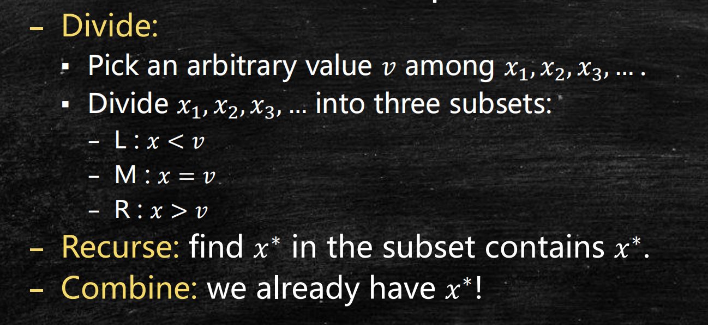
以下面的数组为例，我们选择v=3作为枢轴，将数组划分为三部分。
这样，我们可以得到一个大致排序的数组。这样，根据k的不同，我们可以在不同的部分中寻找x∗。
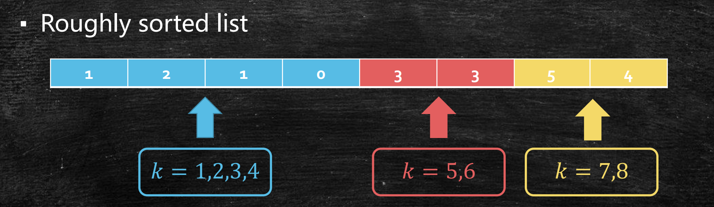
- 如果k≤∣L∣，表明x∗在L中，故我们在L中找第k小的元素。
- 如果∣L∣<k≤∣L∣+∣M∣，表明x∗在M中，输出v即可。
- 如果k>∣L∣+∣M∣，表明x∗在R中，故我们在R中找第k−∣L∣−∣M∣小的元素。
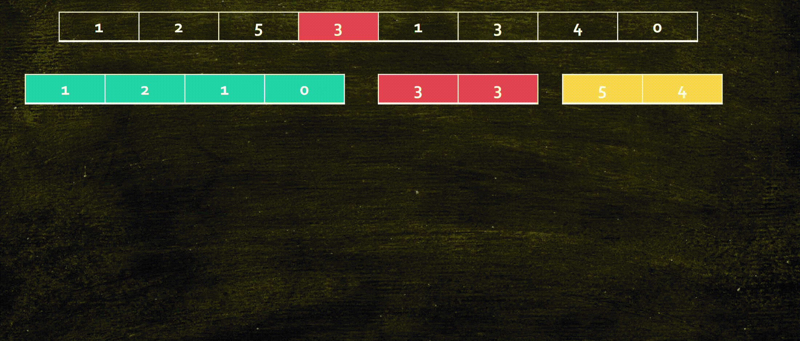
由此，我们可以写出整个算法。
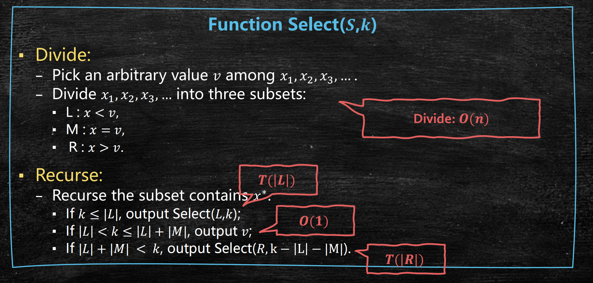
这个算法的正确性可以由基于数组大小n的数学归纳法证明。
时间复杂度分析
从上图的分析中可以看出，该算法的时间复杂度
T(n)≤O(n)+max{T(L),T(R)}
由于 ∣L∣+∣M∣+∣R∣=n 且 ∣M∣≥1，从而有 ∣L∣,∣R∣≤n−1，故
T(n)≤≤≤≤=O(n)+T(n−1)O(n)+O(n−1)+T(n−2)⋯O(n)+O(n−1)+⋯+O(1)O(n2)
这样的时间复杂度是很糟糕的，甚至比逐一选择法的O(nk)和排序选择法的O(nlogn)还要差。
这是因为我们的放缩太松了吗？还是时间复杂度确实很差？让我们考虑一种最不幸的情况，即k=1，且每次v都选到了最大的元素。那么我们每次递归n只能减小1，即
T(n)=O(n)+T(n−1)=O(n)+O(n−1)+T(n−2)=⋯=O(n2)
这表明，这个算法最坏情况下的时间复杂度确实是O(n2)。
那如果我们超级幸运呢？也就是每次都能选到中位数作为v。那么我们有
T(n)=O(n)+T(2n)=O(n)+O(2n)+T(4n)=⋯=O(n)
但是，选到中位数的要求过高，它甚至和一次选中第k小的元素难度相同。事实上，我们并不用那么幸运。考虑如果我们每次选中的v在中位数附近，或者更精确地说，在[31n,32n]范围内，那么我们有
T(n)=O(n)+T(32n)=O(n)+O(32n)+T(94n)=⋯=O(n)
在比较幸运的情况下，我们也能达到O(n)的时间复杂度！基于这个发现，我们可以想到第一个改进方法——采用随机性来选到比较理想的枢轴。
用随机性改进算法
为了加入枢轴选择的随机性，我们只需要在朴素分治法的设计中修改一个词，将“任意选择枢轴”改为“随机选择枢轴”。看似微小的改动，会对算法性能产生多大的改变呢？
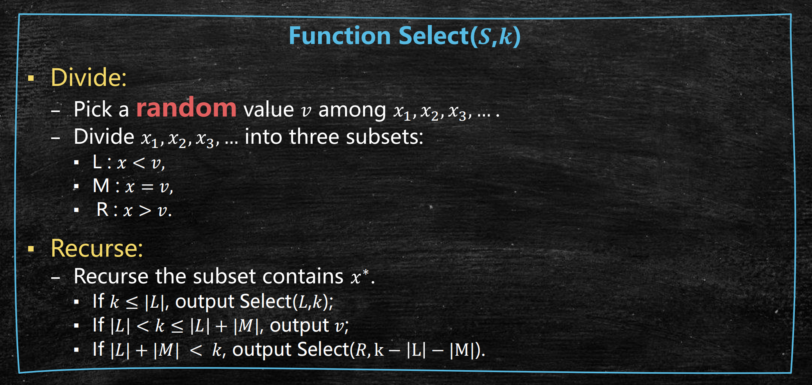
我们何时幸运？
为了分析时间复杂度，我们需要区分枢轴的好坏，即何时我们算是“幸运的”。在这里，我们定义落在中间2∣S∣区域的是好枢轴。
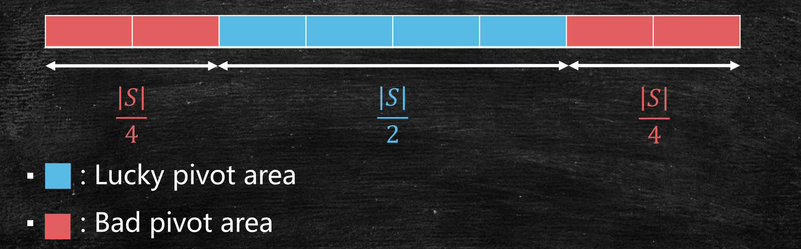
那么，我们会有如下的两个事实：
- 我们有21的概率是幸运的。
- 如果我们总是幸运的，那么有
T(n)=T(43n)+O(n)=O(n)
时间复杂度的数学期望
然而，我们并不总是幸运的，T(n)也会因为枢轴选择的不同而变化。因此，对于随机算法，我们一般会研究时间复杂度的的数学期望。
设τ(n)表示我们将问题规模从n降到43n需要的时间，那么我们有
T(n)=τ(n)+T(43n)
两边取数学期望，得
E[T(n)]=E[τ(n)+T(43n)]=E(τ(n))+E[T(43n)]
选到一次好枢轴，问题规模就能变为原来的43，而选到坏枢轴只能让问题规模减小1。由于我们每一轮选到好枢轴的概率是21，我们选到好枢轴所需轮数的数学期望为2，因此E(τ(n))=O(2n)=O(n)。
选到好枢轴所需轮数X服从p=21的几何分布，即X∼G(21)。根据概率论，其数学期望E(X)=2。
从而，
E[T(n)]=O(n)+E[T(43n)]=O(n)
事实上，对于这样的随机算法，我们还可以研究最坏运行时间、时间复杂度为O(n)的概率等。
中位数的中位数算法
那么如果我们不引入随机性，是否有其他改进的方法呢？这次，我们既不“任意选择枢轴”也不“随机选择枢轴”，而是尝试“选一个好的枢轴”。所谓“好的枢轴”，当然是指靠近中部的元素，这样才能使我们的问题规模快速缩小。
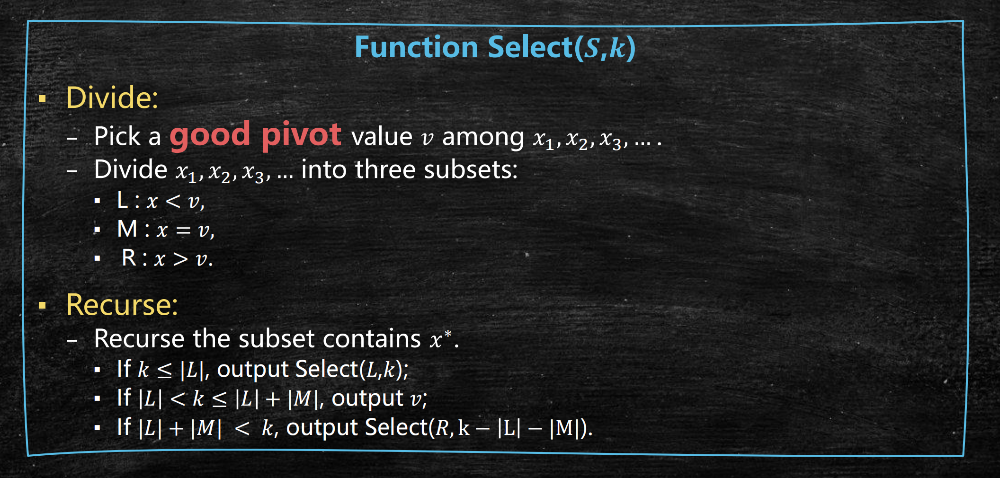
但是，这其实存在着一种平衡，即找到好枢轴所需时间和枢轴质量之间的平衡。我们可以通过排序找到中位数（最好的枢轴），但是这会花费太多时间；我们也可以任意选择一个枢轴，但不好的枢轴会导致算法性能较差。也就是说，当枢轴质量上升，找到它所需的时间也会增加。总的运行时间可以表示为
T(n)=T(c⋅n)+findPivot+O(n)
那么，我们如何才能花较小的代价，找到更好的枢轴呢？这里，我们介绍中位数的中位数算法（Median of Medians）。
算法设计
以下图为例，给定一个数集S，
- 先把S划分为大小为5的子集。
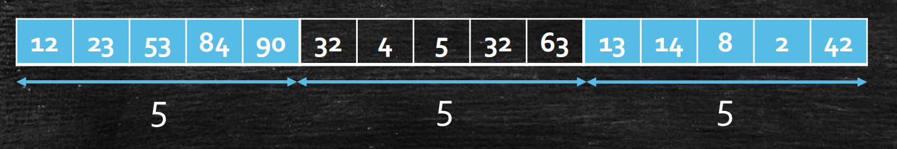
- 在每个子集中找出中位数，记作v1, v2, v3。
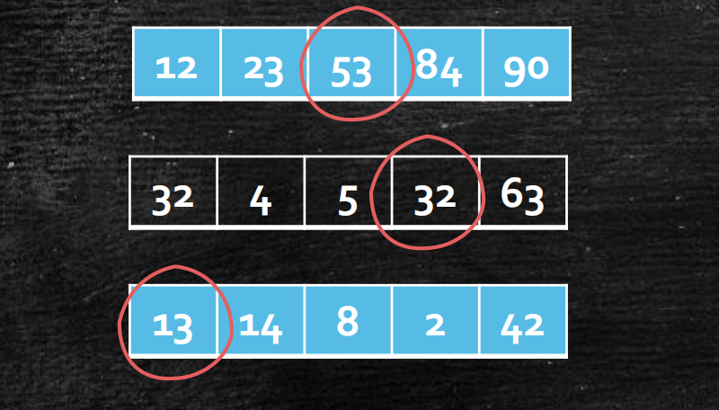
- 将枢轴v取为v1, v2, v3的中位数。
算法分析
那么，这个找枢轴的过程需要花费多少时间呢？不难发现，步骤1需要O(n)，步骤2需要O(n)（因为在5个数中找中位数只需要O(1)）。但是步骤3呢？想要找到子集的中位数，我们只能递归地寻找，因此需要T(5n)。故寻找枢轴的时间为T(5n)+O(n)。
问题是，这样找到的枢轴质量究竟如何？看起来，它是中位数的中位数，所以应该大致位于中间位置。让我们定量分析一下。
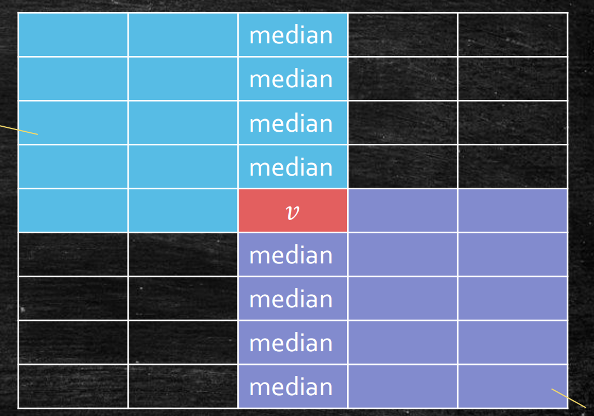
上图中，每一行表示S的一个子集，其中的整数从小到大排列。从上至下，各个子集按中位数的大小从小到大排列。中央的v是算法选出的枢轴，蓝色部分都不大于v，紫色部分都不小于v。我们可以发现，
- 我们有5n个子集，所以有5n个中位数。
- v不大于10n个中位数，同时不小于10n个中位数。
- 每个中位数都不小于同组的2个整数，同时不大于同组的2个整数。
- v不大于103n个整数，同时不小于103n个整数。
因此，我们有max{T(∣L∣),T(∣R∣)}≤T(107n)。
这样，我们就可以逐步分析该算法的时间复杂度。
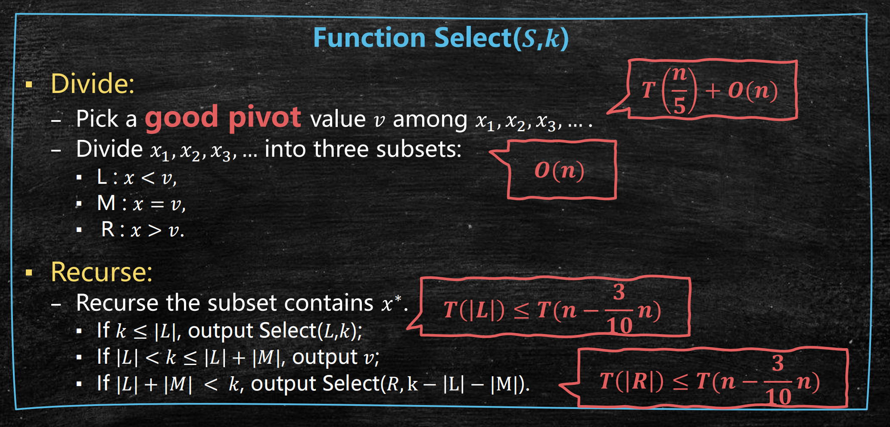
因此，我们可以得到
T(n)=T(5n)+T(107n)+O(n)=T(0.2n)+T(0.7n)+O(n)
这个式子无法用主定理化简，但我们可以先尝试用树形图猜测T(n)。
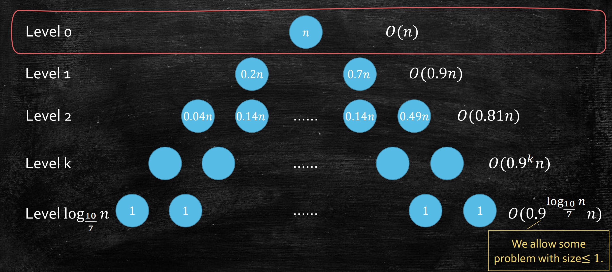
注意到，第0层的合并代价为O(n)，第1层的合并代价为O(0.9n)，第2层的合并代价为O(0.81n)，…，第k层的合并代价为O(0.9kn)。我们可以猜测，每层的合并代价构成等比数列，其最终的和为O(n)。
接下来，我们用数学归纳法证明T(n)=O(n)，即证明T(n)≤Bn。
由于T(n)=T(0.2n)+T(0.7n)+O(n)，我们设此处O(n)≤Cn。
- 基本情况：T(1)=1≤Bn。
- 归纳：
T(n)≤≤≤T(0.2n)+T(0.7n)+Cn0.9Bn+CnBn
取B=10C，那么我们就有T(n)≤10Cn=O(n)。
C表示的是取枢轴、划分数组等操作的数量。如果取C=4，那么T(n)≤40n！由此可以看出，该算法虽然时间复杂度为O(n)，但n前面的常数其实很大。
请小心，在数学归纳法中不要使用大O表示法，因为这可能会造成问题。
例如在朴素分治法中，我们有
T(n)=T(n−1)+O(n)
如果假设T(n)=O(n)，采用
T(n)=T(n−1)+O(n)=O(n)+O(n)=O(n)
这样的归纳法证明，这将会是巨大的错误。
这是因为在归纳中，我们需要保证n前的常数不变，而不能和n有关。
事实上，常数个O(n)的和仍然是O(n)，但这里的O(n)是递归的，从而n前面的常数取决于递归层数，与n的大小有关，这将会导致该常数随n的增大而不断增大，无法找到上界。
以T(n)=T(0.4n)+T(0.7n)为例。如果认为T(n)≤n，采用
T(n)≤0.4n+0.7n=1.1n
会发现问题。
而如果直接采用大O表示法，
T(n)≤O(n)+O(n)=O(n)
会得到荒谬的结论！
事实上，每递归一层，其中蕴含的常数就会以变为1.1倍，而不能用某一常数当作上界，也就不能用O(n)表示！
因此，我们在用数学归纳法证明时，必须展开O(n)前的常数。